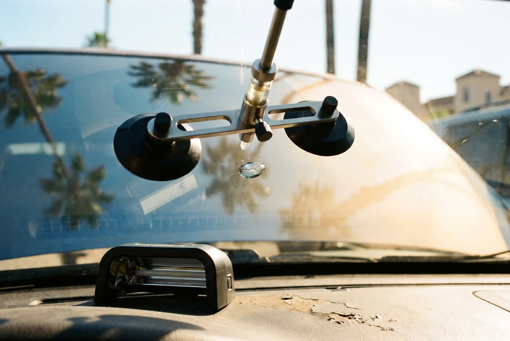
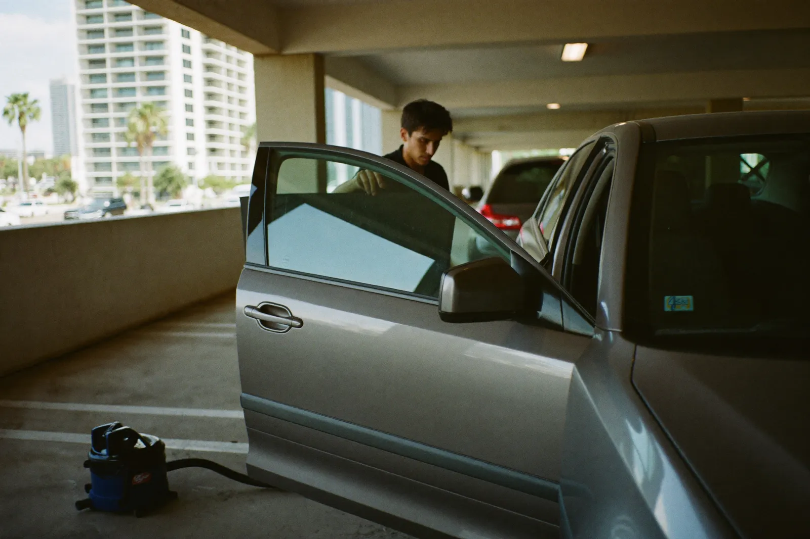

Miami Auto Glass Repair handles five kinds of glass work, all done where your car is parked. Find yours below. Most callers start with “Is this a repair or a whole new windshield?” and that is a fine place to start. Only have a small chip? Skip to chip repair, it is the quickest job here.
Windshield replacement in Miami is the fix for a crack longer than about six inches, a break at the edge of the glass, or damage in the driver’s view. It suits anyone whose windshield can no longer be safely repaired, and with comprehensive coverage Florida law keeps the deductible off the windshield.
Left alone, a long crack keeps running every time the car bakes in a parking lot and the A/C hits the glass. It also scatters headlight glare on wet roads after a storm, which makes a night drive on the Palmetto harder than it needs to be.
Call us today for windshield replacement in Miami. Read more about windshield replacement.

Windshield chip repair in Miami fills a fresh rock chip with clear resin so it stops spreading and gets much harder to see. It works for chips smaller than a quarter that sit away from the edges.
Ignored, a chip collects dirt and rainwater, and the daily swing from hot sun to cold A/C pries it wider. A few weeks of summer can turn it into a crack that needs a whole new windshield.
Call us today for windshield chip repair in Miami. Read more about windshield chip repair.

Car window replacement in Miami covers door glass and the small quarter windows broken by a break-in, an accident or a failed window regulator. Side glass is tempered, so it shatters into small pieces that have to be vacuumed out of the door and the cabin.
Until it is replaced, a broken window leaves the car easy to get into and lets the afternoon rain soak the seats. Plastic and tape rarely survive a run down I-95. A break-in is upsetting enough without a soaked back seat on top of it.
Call us today for car window replacement in Miami. Read more about car window replacement.

Rear windshield replacement in Miami puts new back glass on sedans, hatchbacks, SUVs and pickups. Most rear glass carries defroster lines, and many cars run the radio antenna or a rear wiper through it, so those get reconnected during the job.
With the back glass gone, the cabin is open to theft and rain, and broken pieces keep falling into the trunk or cargo area. You also lose the rear defroster, which clears the fog that builds on the glass in Miami humidity.
Call us today for rear windshield replacement in Miami. Read more about rear windshield replacement.

ADAS camera calibration in Miami re-aims the forward camera behind the rearview mirror after a windshield is replaced. Most newer vehicles with lane-keep assist, automatic emergency braking or adaptive cruise control need it.
Skipped, the camera can read the lane a few degrees off. Warning lights may come on, or the safety systems may brake or steer at the wrong moment.
Call us today for ADAS camera calibration in Miami. Read more about ADAS camera calibration.

Call and describe the damage. We will tell you whether it is a repair or a replacement and give you a free quote.
Call (786) 917-3712 Now